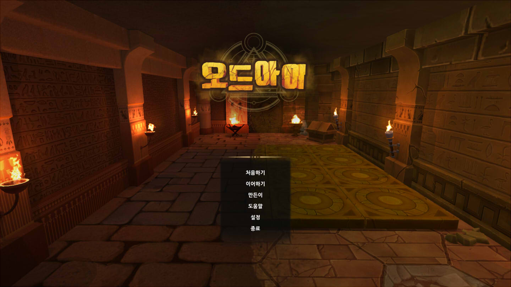

처음
Hello!
初めに
- 오른쪽 메뉴를 통해 원하는 곳으로 바로 이동할 수 있습니다.
- 코드가 끝까지 보이지 않을 경우 좌우로 스크롤 해주세요.
코드 예시:
#include <stdio.h>
int main(void) {
puts("Hello World------------------------------------------------------------------------------------------------------------------------------------------------------------------------------------------------------------------------------------------------------------!!!\n");
return 0;
}
- 이 페이지는 모바일 기기나 저해상도 화면에서는 정상적으로 표시되지 않을 수 있습니다.
포트폴리오
Portfolio
ポートフォリオ
1. 말하는 고양이 톰(TALKING TOM CAT) 모조 애플리케이션
1. Fake Application of the 'Talking Tom Cat'
1. TALKING TOM CATの模倣したアプリ
| 출시명 | 말하는 판다 토킹 포포 |
|---|---|
| 개발 시기 | 2011년 봄 |
| 목적 | 상업성(배너 광고, 일부 기능 유료) |
| 형태 | 대학교 내 학생 창업 동아리 활동 작품 |
| 개발편성 | PM 1명, 기획 1명, 3D 전반 외주 UI 그래픽 디자인 1명, 프로그래밍 1명 |
| OS | Android 2.1 이상 |
| 언어 | Java |
기능
Overview
概要
- 듣고 말하기
- 포포를 터치하면 반응을 보입니다.
- 핸드폰 마이크에 소리가 들리면 포포가 이를 듣습니다.
- 들은 소리를 피치업하여 다시 재생합니다.
- 악기 연주 모드
- 아이콘을 통해 악기 연주 모드로 변경할 수 있습니다.
- 화면 아래의 악기를 눌러 연주하면 소리에 맞추어 포포가 춤을 춥니다.
- 메뉴에서 다른 악기를 선택할 수 있습니다.
- 일부 악기는 구입하여야 선택할 수 있습니다.
애니메이션의 표현
Showing Animation
アニメーションの再生
제가 이 프로젝트에 착수했을 때는 전담 프로그래머가 없는 상태였으며, 외주로 제작된 FPS 30의 320*480 픽셀 다중 프레임 애니메이션을 jpg 파일로 전달 받았습니다.
토킹 포포는 각각의 동작에 따라 애니메이션이 따로 존재하는데, 이 모든 동작의 프레임들을 한 번에 다 디코드하면 튕기고(OutOfMemoryException), 동작이 필요할 때마다 한 동작 전체를 디코드하면 그 만큼 화면이 멈췄으며, 매 프레임을 한 장씩 디코드하면 애니메이션이 느리게 재생되었습니다. 그래서 한 장을 디코드할 때마다 이 디코드에 걸리는 시간을 참고해서 몇 장을 뛰어 넘어 다음 이미지를 디코드하게 하였습니다.
FPS를 동적으로 변경하는 코드:
// Some variables are omitted
// Max fps of animation
private final static float stdFps=30;
// Index of currently showing frame
private float curFrame;
// Target fps
private float fps=stdFps;
// Milliseconds per frame
private int millspf=(int)(1000/stdFps);
// Offset for when the normal decoding time limit is over
private int offset=0;
private void drawNextFrameAndWait() {
if((int)(curFrame+.5)>=playingAnim.length)
… // The animation is done
if(offset==0) {
// Start drawing
startTime = System.currentTimeMillis();
canvas = mSurfaceHolder.lockCanvas();
frame=BitmapFactory.decodeResource(mResources, playingAnim[(int)(curFrame+.5)],opt);
canvas.drawBitmap(frame,scale, null);
frame.recycle();
mSurfaceHolder.unlockCanvasAndPost(canvas);
}
else {
curFrame += stdFps/1000*offset;
offset=0;
return;
}
// End drawing
time = (int)(System.currentTimeMillis()-startTime);
if(time<millspf) {
Log.d(tag,"+"+(millspf-time)+"mills");
sleep((long)(millspf-time));
// If time is enough to draw more frames
if(time<=(float)1000/(fps)) {
changeFps((float)1000/time-fps);
}
}
else if(time>millspf){
Log.d(tag,"-"+(time-millspf)+"mills");
offset += time-millspf;
changeFps((float)1000/time-fps);
}
curFrame += (float)stdFps/fps;
}
private void changeFps(float add) {
fps += add;
if(fps>stdFps) fps = stdFps;
if(fps<1) fps = 1;
if(DEBUG) Log.d(tag,""+"fps has changed:"+fps);
…
millspf = (int)(1000/(float)fps);
}
말 따라하기
Repeating sounds
言葉マネ
단순한 녹음과 재생은 Android에서 제공하는 API가 있어서 괜찮을 줄 알았는데, 토킹 톰 캣과 같이 작동시키려고 하니 다음과 같은 작업을 하여야 하였습니다.
- 항상 마이크를 켜 놓고
- 소리가 나면 저장을 시작
- 소리가 줄어들면 저장 종료
- 녹음된 데이터의 후 처리
- 재생
당시 Android API 중에 음성 인식을 위한 SpeechRecognizer라는 클래스가 있었고 여기서 onBeginningOfSpeech(), onEndOfSpeech()라는 콜백 메소드를 제공했었는데, 인터넷 연결이 안 되어 있으면 아무 것도 동작이 안 되는 문제가 있어서 사용할 수 없었습니다.
대신 API 중에 녹음을 버퍼에 저장하는 것이 있어서 버퍼를 검사하여 소리 크기를 알아낼 수 있었습니다.
버퍼에서 음량 알아내기:
mAudioRecord.read(shortArrayBuffer,0,shortArrayBuffer.length); rmsAmplitude = rms(shortArrayBuffer);
// root mean square
private int rms(short[] array) {
long sqsum = 0;
for(int i=0;i<array.length;i++) {
sqsum += array[i]*array[i];
}
return (int) Math.sqrt(sqsum/(float)(array.length));
}
그리고 소리 크기가 일정 수치를 넘으면 녹음을 시작하게 하였는데, 테스트 결과 이 소리 크기가 핸드폰 기종마다 너무 달랐습니다. 몇 번의 시행착오 끝에, 단위시간당 음량 변화 비율을 계산하여 이것이 일정 수치를 넘어가면 녹음을 시작하는 것이 안정적이라는 판단을 내리게 되었습니다. 코드는 다음과 같습니다.
// Some variables are omitted
private int rmsAmplitude;
private int whiteNoiseAmplitude=NONE;
// Amplitude to start recording
private int voiceAmplitude=NONE;
// Min amplitude to sustain recoding
private int amplitudeBreak = NONE;
// Sensitivity. Smaller, more sensitive
private float recognitionSensitivity = 5;
…
rmsAmplitude = rms(shortArrayBuffer);
if(whiteNoiseAmplitude!=NONE && rmsAmplitude/(float)whiteNoiseAmplitude>recognitionSensitivity) {
voiceAmplitude = rmsAmplitude;
amplitudeBreak = (voiceAmplitude+whiteNoiseAmplitude)/2;
}
whiteNoiseAmplitude = rmsAmplitude;
if(amplitudeBreak!=NONE && rmsAmplitude>amplitudeBreak) {
if(mState==state.normal) {
onBufferReceived(shortArrayBuffer);
lastListenedTime = System.currentTimeMillis(); // Initialize
eventHandler.sendEmptyMessage(EventIds.start_listen);
setState(state.listening); // Start recording
}
else if(mState==state.listening) {
onBufferReceived(shortArrayBuffer);
lastListenedTime = System.currentTimeMillis(); // Reset
}
}
else {
if(mState==state.listening) {
onBufferReceived(shortArrayBuffer);
now = System.currentTimeMillis();
if(now-lastListenedTime>waitListeningTime)
onEndOfSpeech(); // Stop recording
}
}
그리고 녹음된 소리의 피치를 높이는 것은 방법을 강구하다가 그냥 배열 길이를 줄이는 것으로 빨리감기 했습니다.
private void onBufferReceived(short[] originalShortArray) {
short[] shortArray; // Pitched up audio
shortArray = new short[(int)(originalShortArray.length/playingSpeed)];
{
float scaleIdx=0;
for(int i=1;i<shortArray.length-1;i++){
scaleIdx = (float)i/shortArray.length*originalShortArray.length;
shortArray[i] = (short)((originalShortArray[(int)(scaleIdx)]+originalShortArray[(int)(scaleIdx+1)])/2);
}
}
… // Save the shortArray in a file
}
2. 스마트폰 화면 전체에 글자를 띄워주는 애플리케이션
2. Application Displays Big Latters
2. 画面全体に文章を表示するスマフォアプリ
| 출시명 | 내손안의 미니전광판III |
|---|---|
| 개발 시기 | 2012년 봄 ~ 2012년 가을 |
| 목적 | 상업성(배너광고, 일부 기능 유료) |
| 형태 | 대학교 내 학생 창업 동아리 활동 작품 |
| 개발편성 | PM 겸 기획 1명, UI 디자인 1명, 프로그래밍 1명 |
| OS | Android 2.1 이상 |
| 언어 | Java |
기능
Overview
概要
- 한 줄~다섯 줄까지 글자 입력 가능
- 여러가지 표시 방법을 제공
- 폰트 변경 가능, 전광판에 깜박이는 사진 추가 가능
- 전체화면으로 전광판을 보는 중에도 편집 가능
- 작성한 전광판 보존 기능 제공
- 홈 화면에 설치하는 위젯 제공(빠른 불러오기)
- 일부 기능 유료(위 영상에서는 모두 제한 해제)
이 애플리케이션의 iOS 버전은 외주로 제작한 것으로 알고 있습니다.
액티비티 소개
Activities
アクティビティー概要
미니전광판3에는 여러 액티비티(창)가 있습니다. 다음은 그 중 일부입니다.
전광판 그리기
Drawing A LED
Ledの作成
전광판을 그리는 작업은 SurfaceView를 상속받은 LedView라는 클래스가 전담하고 있습니다. 미니전광판3에서 전광판을 볼 수 있는 액티비티는 CreateLed와 LedViewer 두 곳이 있지만 둘 모두 LedView 하나의 클래스를 사용하여 전광판을 그립니다.
LedView 클래스의 모습:
public class LedView extends SurfaceView implements SurfaceHolder.Callback {
private Led mLed = new Led();
private LedDrawThread mLedDrawThread=null;
private SurfaceHolder mSurfaceHolder;
public class LedDrawThread extends Thread {
public void run() {
…
drawLed(canvas);
…
}
…
}
}
LedView는 전광판 정보들을 Led라는 클래스의 인스턴스를 통해 갖고 있으며, drawLed(Canvas) 메소드는 캔버스에 전광판을 그리는 일을 하는데 배경색, 글자, 테두리, 문양, 사진 순으로 전광판을 그립니다. 또한 이 메소드는 단순히 그리는 일만 담당하며, 그리기를 위한 사전 준비는 changePaintEveryTick() 메소드와 adjustMovement() 메소드에서 처리됩니다.
필요한 경우 페인트를 변경하는 메소드:
private void changePaintEveryTick() {
if(mLed.getShowingEffect() == EFFECT_RAINBOW) {
// Random excepts background color
textPnt.setColor(Const.rainbow[(int)(System.currentTimeMillis()/STROBE_INTERVAL)%Const.rainbow.length]);
}
else if (mLed.getShowingEffect() == EFFECT_STROBE && toggleEvery(STROBE_INTERVAL))
textPnt.setColor(mLed.getBackgroundColor());
else if(mLed.getShowingEffect() == EFFECT_INVERSE && toggleEvery(STROBE_INTERVAL)) {
bgPnt.setColor(Const.color[mLed.getTextColor()]);
textPnt.setColor(Const.color[mLed.getBackgroundColor()]);
} else {
bgPnt.setColor(Const.color[mLed.getBackgroundColor()]);
textPnt.setColor(Const.color[mLed.getTextColor()]);
}
}
위 코드에서, 레인보우, 깜박이(EFFECT_STROBE), 화면전환(EFFECT_INVERSE), 보통의 경우에 따라 배경색 페인트와 글자색 페인트를 바꾸어 주는 것을 관찰할 수 있습니다.
한편 글자의 움직임을 담당하는 adjustMovement() 메소드는 내용을 설명하기가 복잡하여 부득이 생략합니다.
전광판 저장/불러오기
Saving/Loading the LED
Ledの保存
당시 학교에서 데이터베이스 이론을 배우고 있었는데 미니전광판3가 마침 이것을 써보기 적당하다 싶어 이 때다 하고 써봤습니다.
테이블 생성:
public static final String TABLE_NAME = "led";
db.execSQL("CREATE TABLE "+TABLE_NAME+" ( _id INTEGER PRIMARY KEY AUTOINCREMENT"
+",message TEXT"
+",typeface TEXT"
+",textSize FLOAT NOT NULL"
+",textColor INT NOT NULL"
+",backgroundColor INT NOT NULL"
+",borderColor INT NOT NULL"
+",backgroundTile INT NOT NULL"
+",borderEffect INT NOT NULL"
+",showingEffect INT NOT NULL"
+",switchingType INT NOT NULL"
+",switchingTime FLOAT NOT NULL"
+",photo TEXT"
+",photoTime FLOAT NOT NULL"
+");");
)
액티비티 간 전광판 데이터 전달
Data Communication Between Activity
アクティビティー間のデータの渡し
사용자가 전광판 편집 화면(CreateLed 액티비티)과 전체화면(LedViewer 액티비티) 사이를 이동할 때는 DB를 사용하지 않고 다음과 같이 Led 인스턴스를 인텐트에 포함시켜서 전달하였습니다.
전광판 데이터를 인텐트에 담아 다른 액티비티로 전달하는 코드:
itt = new Intent(this,LedViewer.class); itt.putExtra(Const.EXTRA_LED, preview.getLed()); startActivityForResult(itt,REQUEST_SHOWING);
생성된 액티비티에서 인텐트를 참조하는 코드:
public void onCreate(Bundle savedInstanceState) {
…
Intent mIntent = getIntent();
mLED = (Led)mIntent.getParcelableExtra(Const.EXTRA_LED);
mLedView.setLed(mLED);
initHud(mLED);
…
}
한편, 인텐트에는 Parcelable 인터페이스를 구현하는 인스턴스만을 포함시킬 수 있으므로 Led 클래스는 이를 구현하고 있습니다.
Led 클래스의 정의:
public class Led implements Parcelable { … }
3. 유니티 3D 모바일 아케이드 게임
3. Unity 3D Mobile Timed Game
3. Unityの3Dモバイルアーケードゲーム
| 명칭 | MWAMWA(뫄뫄) |
|---|---|
| 플랫폼 | PC, 모바일 |
| 개발 시기 | 2015년 2학기 |
| 목적 | 대학 학부 수업 과제 |
| 형태 | 프로토타입 |
| 개발편성 | 기획 1명, UI 디자인 1명, 3D 1명, 프로그래밍 1명 |
| 엔진 | Unity 5.3.2f1 |
| 언어 | C# |
내용과 특징
Overview
概要
- 제한 시간 동안 하늘에서 떨어진 돈을 적 캐릭터보다 많이 주우면 이기는 게임입니다. 승패와 무관하게 랭킹도 남습니다.
- 장애물이나 적과 부딪히면 넘어지므로 피해야 합니다.
- 돈을 충분히 먹으면 Fever를 발동할 수 있으며, 피버 중에는 장애물이나 적과 부딪혀도 넘어지지 않습니다.
- 게임 이름인 뫄뫄는 돈을 모아모아야 한다는 뜻입니다.
내비게이션
Navigation
ナビゲーション
뫄뫄는 적의 원활한 이동을 위해 Unity에서 제공하는 Navigation을 사용하고 있습니다. Navigation을 적용하지 않은 초기 버전에서는 종종 적이 벽에 코를 박고 달리는 모습을 볼 수 있었습니다.
돈의 움직임
Movement Of Money
お金の動き
회오리를 표현하기 위해 전후좌우로는 원 운동을, 위아래로는 등가속도 운동을 하되, 시간이 지나면서 원의 지름이 줄어들게 하였습니다.
4. 유니티 3D PC 어드벤쳐 게임
4. Unity 3D PC Adventure Game
4. Uniｔyの3Dパソコン用アドベンチャーゲーム
| 명칭 | ODDEYE(오드아이) |
|---|---|
| 플랫폼 | PC |
| 개발 시기 | 2015년 겨울~2016년 가을 |
| 목적 | 대학 졸업작품 |
| 형태 | 미완성(당초 계획의 1/2 볼륨) |
| 개발편성 | 기획 1명, 3D 2명, 영상 및 UI 디자인 1명, 프로그래밍 1명 |
| 엔진 | Unity 5.3.3f1 Unity 5.3.3f1 |
| 언어 | C# |
시나리오 진행
Scripting
シナリオの処理
비록 오드아이를 위한 별도의 스크립트의 편집 시스템을 제작하지는 않았지만, 시나리오를 표현하기 위한 코드를 가독성 있게 만들기 위해 노력하였습니다. 예를 들어 위의 영상은 아래와 같은 코드로 시작합니다.
override public void ChapterOpening()
{
// Prevent the player from doing anything.
eventManager.ChangeAllActionAbility(false);
// Hide view and head-up display immediately. 'last:true' means the effect will be last.
// *z-order of the screen: view of 3d components - blind for game - hud - blind for hud(front)
eventManager.GameBlackOut(last:true);
eventManager.HudBlackOut(last:true);
// Enable player to use 'use action' which is used to skip a dialogue window.
eventManager.ChangeActionAbility(true, PlayerAction.Using);
// Show the dialogue with blind placed on front of the hud. As result, the dialogue appears slowly.
eventManager.HudFadeIn(3f, last:true, synchronize:true);
OddName = "?";
eventManager.NormalDialogue(OddName, "이봐, 들려?");
// White out the screen and the hud.
eventManager.HudColorOut(Color.white, .1f);
// Restore game view from black.
eventManager.GameFadeIn();
// Restore whole screen from white. Setting 'synchronize' parameter to true makes two command process at once.
// In other words, screen will be white in 3 seconds and dialogue will appear in 2.5 seconds.
eventManager.HudColorIn(Color.white, 3f,synchronize:true);
eventManager.Wait(2.5f);
// Show a dialogue. Every dialogues wait for user's reaction by default
eventManager.NormalDialogue(OddName, "아, 이제 들리는 것 같네, 안녕?");
// Enable the player to use mouse for looking around. It executed immediately, so second line will be processed in the same time.
eventManager.ChangeActionAbility(true, PlayerAction.ViewRotation);
eventManager.NormalDialogue(OddName, "마우스를 움직이면 주변을 둘러볼 수 있어.");
…
}
위에서 보이는 작은 하나하나의 조작은 Event라는 이름으로 정의되었으며, EventManager 클래스는 순차적으로 작성된 이벤트들을 큐로 관리하고, 한 이벤트가 끝날 때까지 다른 이벤트를 지연시키는(때로는 동시에 일어나게 하는) 일을 하여줍니다.
이 때 모든 이벤트는 Event 클래스를 상속받는 하나의 클래스들인데, Event 클래스는 다음과 같이 생겼습니다.
class Event
{
public string eventName = "Default event";
protected System.Action attachedInitialize;
protected System.Action attachedProcess;
protected System.Action attachedOnFinished;
protected Func<bool> attachedProcessIsDone;
public bool initialized = false;
protected bool finished = false;
public EventManager manager;
public bool? synchronize;
public Event(EventManager managar, Action attachedInitialize = null, Action attachedProcess = null, Func<bool> attachedProcessIsDone = null, Action attachedOnFinished = null, bool? synchronize = null) { … }
virtual public void Initialize() { … }
virtual public void Process() { … }
virtual public bool Done() { … }
virtual public bool IsFinish() { … }
virtual public void OnFinished() { … }
virtual public void Finish() { … }
}
Event 클래스는 이벤트가 시작할 때의 초기화, 이벤트가 진행중일 때의 처리, 이벤트가 끝났을 때의 처리를 지정할 수 있도록 해 줍니다. 예를 들어, 5초 동안 화면을 페이드아웃하기 위해 다음과 같은 클래스를 설계할 수 있습니다.
class FadeOutEvent : Event
{
public FadeOutEvent(EventManager managar) : base(managar)
{
eventName = "FadeOutEvent";
}
public float totalTime = 5;
public float timeLeft;
override public void Initialize() {
timeLeft = totalTime;
base.Initialize();
}
override public void Process()
{
timeLeft -= Time.deltaTime;
screenManager.GameFade(1 - timeLeft / (float)totalTime); // 화면을 덮는 검은 막의 opacity
}
}
(실제 구현에서는 게임 화면과 hud를 각각 검은색 뿐만이 아닌 원하는 색으로도 칠할 수 있도록 하기 위해 CameraEvent라는 클래스를 작성하여 사용하고 있습니다)
유저 인터페이스
User Interface
ユーザーインターフェース
일반적으로 Unity에서 권장하는 UI 기술들을 사용하였으며 프로그래밍적으로 특이한 부분은 없지만 그냥 이뻐서 보여드리고 싶었습니다.
두 세계의 표현
Double World
２つの世界の表現
오드아이의 두 세계는 한 좌표 공간 안에 겹쳐 존재합니다. 이것은 Unity에서 제공하는 Layer, 비출 Layer를 제한할 수 있는 Camera, 상호 작용할 Layer를 선택할 수 있는 물리 효과들이 보조해 줍니다.
다만 세계를 이동할 때의 캐릭터는 지면의 낙차가 발생하지 않도록 추가적으로 조정됩니다. 이것은 반대편 세계 캐릭터의 머리 위 좌표에서 연직방향으로 광선을 쏘아 충돌하는 지점으로 캐릭터를 이동시키는 방법으로 처리됩니다. 다음 코드는 세계가 방금 바뀌었을 때에 현재 캐릭터의 위치를 조정하는 것을 보여줍니다.
void WorldSwitchHandler.OnWorldSwitched()
{
currentCharacter.transform.position = anotherCharacter.transform.position;
if (anotherCharacter.isGrounded)
attachToGround(currentCharacter);
anotherCharacter.leaveThisWorld();
currentCharacter.transform.rotation = anotherCharacter.transform.rotation;
currentCharacter.velocity = anotherCharacter.velocity;
}
다음은 캐릭터를 땅에 붙이기 위해 사용된 메소드입니다.
static public Vector3 attachToGround(PlayerCharacter player)
{
int layerMask = (player == cyanCharacter)?(1<<LayerMask.NameToLayer("CyanGround")):(1 << LayerMask.NameToLayer("RotGround"));
// Cyan and Rot are world's names.
if (Physics.SphereCast(player.transform.position + Vector3.up * 8, player.radius, Vector3.down, out hit, 11f,layerMask))
{
player.transform.position = hit.point;
return hit.point;
}
return Vector3.zero;
}
레이어를 구분하여 충돌시키기 위해 마스크를 사용하는 것과, 캐릭터가 사실은 캡슐 형태이기 때문에 광선을 대신 구를 쏘는 것을 확인할 수 있습니다.
한편 세계를 바꿀 때는 시각적인 두 가지 효과가 나타나는데, 하나는 화면을 잠시 가리는 것이고 다른 하나는 마치 레이저가 세계를 스캔하는 것 같게 보이는 효과입니다. 이것은 Unity의 Projector를 이용하여 구현하였습니다.
5. 2인용 유니티 3D 아케이드 게임
5. Unity 3D Timed Game For Two Player
5. 二人用 Unityの3Dアーケードゲーム
| 명칭 | 대머리 |
|---|---|
| 플랫폼 | PC |
| 개발 시기 | 2017년 2학기 |
| 목적 | 지인 과제 도움 |
| 개발편성 | 3명 |
| 엔진 | Unity 5.5.1f1 |
| 언어 | C# |
그 외
Résumé
その他
프로그래머 정보
Technical Experience
プログラミング参考事項
| 사용 경험이 있는 언어 | C#, Java, PHP, Python, JavaScript |
|---|---|
| 사용 경험이 있는 툴 | VSCode, Unity, Eclipse, VisualStudio |
| 학교 수업이나 기타 필요에 의해 간단하게 익힌 것 | Node.js, Lua, C, Ruby, Python, UnrealEngine4 |
연락처
Contact
連絡先
- Github @lens0021